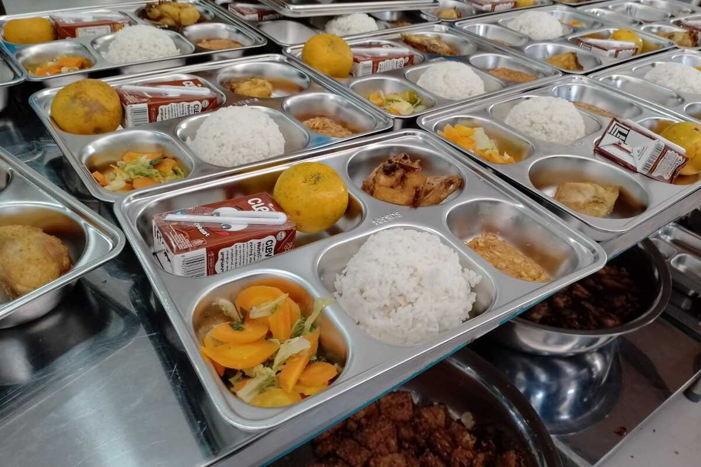

KATEGORI
Judul Artikel Lengkap
•
15 September 2026

Dunia transportasi laut nasional kembali diguncang musibah maritim menyusul tenggelamnya KM Virgo di perairan lepas nusantara akibat terjangan gelombang tinggi...

Transformasi penggerak ekonomi pedesaan melalui pelibatan KUD dan kelompok tani...

Langkah restrukturisasi besar-besaran untuk optimalisasi penerimaan negara...

Analisis pergerakan saham dan tabel harga rata-rata komoditas pangan pokok...

Penanganan korban dan mitigasi bencana hidrometeorologi di wilayah pegunungan...

Langit malam nusantara disuguhkan pemandangan astronomis memukau konjungsi kasat mata Bulan sabit muda dan Bintang Kejora...
Astronomi Publik
Investigasi mendalam terkait aspek keselamatan maritim, dugaan overloading, dan koordinasi evakuasi SAR Gabungan...
Investigasi Khusus

Mendorong multiplier effect ekonomi kerakyatan melalui pembelian langsung bahan baku dari petani dan peternak lokal...
Kebijakan Nasional
Data ringkas bursa saham utama, sektor penggerak, dan indikator pasar finansial global.
| Sektor Utama Bursa | Terakhir | Perubahan | Sentimen Pasar |
|---|---|---|---|
| Financials (IDXFIN) | 1,420.50 | +1.24% | Bullish (Penggerak Utama) |
| Consumer Staples (IDXCYCL) | 812.30 | +0.45% | Stabil / Konsolidasi |
| Energy & Mining (IDXENERGY) | 2,310.80 | -0.32% | Koreksi Tipis Komoditas |
Statistik menyeluruh dari nilai kapitalisasi aset kripto global secara real-time.